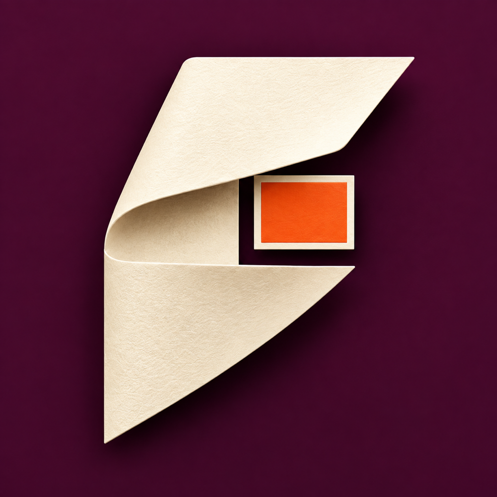
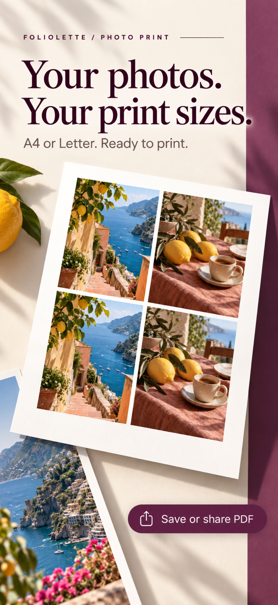
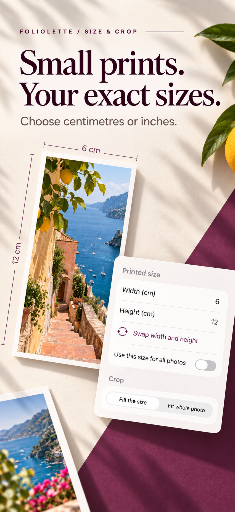
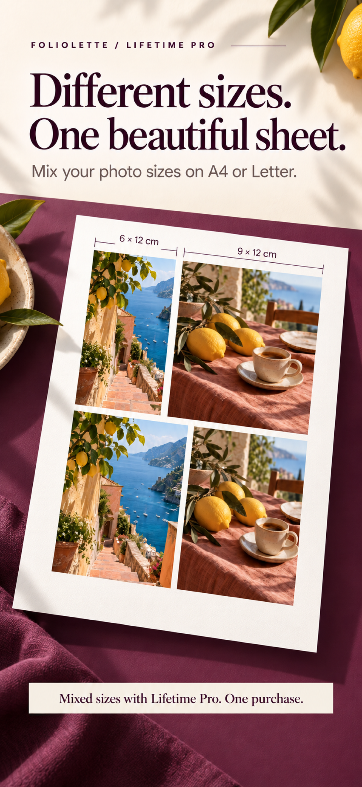
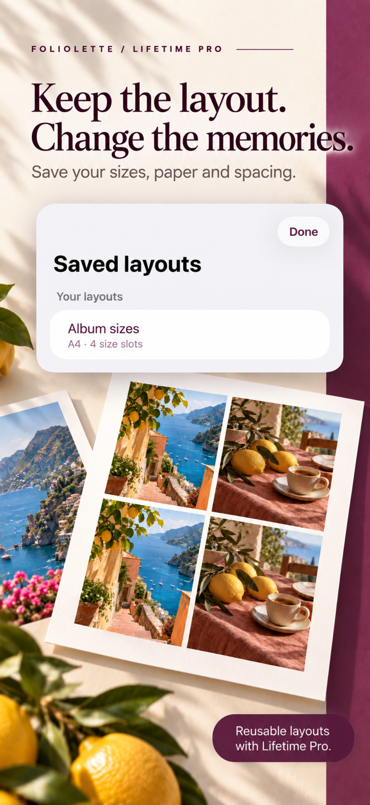
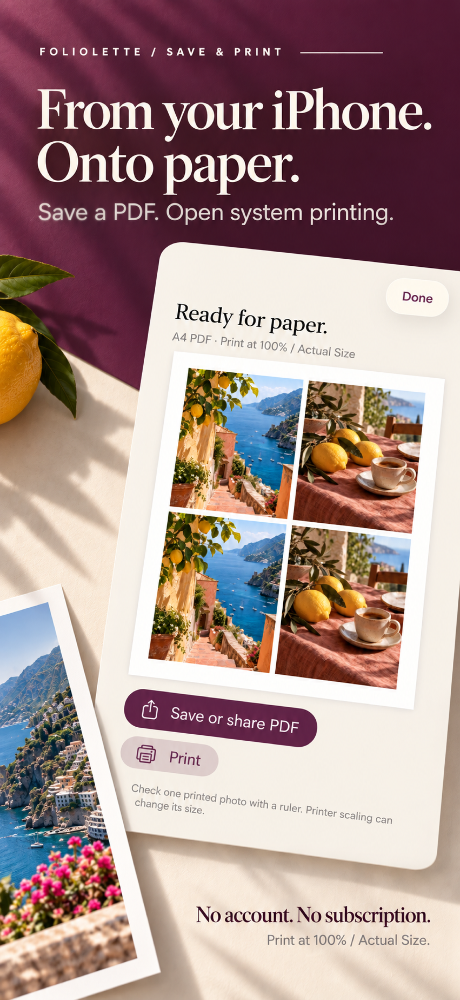

FOLIOLETTE · EXACT PHOTO SIZES & PDF
Your photos.
Your print sizes.
A considered little tool for bringing memories onto paper. Choose centimetres or inches, arrange an A4 or Letter sheet, and make a printable PDF.
In production preparation. Not yet available on the App Store.





Made for the everyday project
Albums, journals and memory boxes deserve photos that fit. Adjust crop, margins and spacing, then preview, export or print. Free includes four equal-size photos with full-quality PDF. Lifetime Pro adds mixed sizes, up to 24 photos and reusable layouts.
Use 100% / Actual Size when printing and measure a sample. Printer settings can change dimensions.
Native. Local. Thoughtful.
Swift 6 and SwiftUI for iPhone, targeting iOS 16 and later. ImageIO import, shared millimetre-based preview and Core Graphics PDF geometry, atomic local drafts, PDFKit and verified StoreKit 2 entitlements.
No account, ads or tracking. Photos stay on your iPhone unless you choose to share or print. Apple handles purchases.
From product strategy to release preparation
A focused independent product covering UX, native engineering, purchase testing, editorial branding and ASO. Automated layout, image, PDF, persistence and StoreKit tests support development. Physical printing, real-device validation and App Store approval remain pending.
Engineering showcase · Privacy · Support